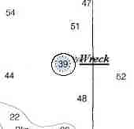

Link Index
MWDC
Home Page
Shipwrecks Page
Albert Galatin
Alice M. Colburn
Alice M. Lawrence
Ardandhu
Barge and Crane
California
Charles S. Haight
Chelsea
Chester Poling
City of Salisbury
Corvan
Dixie Sword
Edward Rich
French Van Gilder
Henry Endicott
Herbert
Herman Winter
HMCS St. Francis
James Longstreet
John Dwight
Kershaw
Kiowa
Lackawanna
Lunet
Mars
Pemberton
Pendleton
Pinthis
Port Hunter
Pottstown
Romance
Seaconnet
Trojan
USS Grouse
USS New Hampshire
USS Triana
USS Yankee
USS YSD
Vineyard Sound
Lightship
|
Description: Fishing vessel; Steel
Dimensions: length - 86 ft. 7 in. width - 22 ft. 6 in. depth - 12 ft. 9 in.
Tonnage: gross - 159 other -
Propulsion: Diesel; Single propeller
Machinery: 1, Fairbanks, Morse & Co. engine, 8 cylinders, 10 inch diameters, 12.5 inch stroke, 320 Brake Horse Power
Cargo: 13200 pounds of Scallops
The Shipwreck
Date Sunk: February 20, 1961
Cause: Collision, with Ledge
Location: Buzzards Bay, South of Gooseberry Neck, off Westport.
Coordinates: Latitude, 41o - 16.4' N Longitude,71o - 02.1' W
Loran: 14238.8 and 43953.3
After loading a cargo of scallops from a rich bed off Block Island, Rhode Island, the dragger Hilda Garston headed for home. Passing the Buzzards Bay Light Vessel, a course was set which would take the fishing vessel near the Hen and Chickens Reef buoys.
Soon thereafter and without warning Hilda Garston struck something that knocked out her propeller and ruptured the hull. A mayday was dispatched but the scalloper was going down to fast to await rescue. Water was pouring in under her engines and would soon overwhelm the craft. Taking to their dories the crew cast off and watched transfixed as their vessel settled by the stern and sank from view. With some effort the Garston's crew rowed against a two-knot current eventually making landfall on a deserted stretch of Horse Neck State Beach.
Until divers inspected her hull, dockside speculation into what sank the Hilda Garston included an iceberg, and a submarine. Divers Bradley W. Luther and Oly Smith were contracted to find the wreck and prepare her for salvage. Luther's initial survey showed the propeller had not been lost as originally speculated, rather, the blades had been bent. Although the starboard propeller guard was intact, the port guard was twisted beyond recognition, as if struck by something very hard.
Following the brace for the port guard gave him part of the answer. A brace plate, welded to the hull, attaches the brace. The force of whatever struck Hilda Garston pealed back that section of hull to which the brace plate was attached. Not a very large hole, but large enough to flood the fisherman.
Luther theorized that the vessel might have sideswiped Old Cock Rock, a part of Hens & Chickens Reef. If she struck a floating object damage should have been evidenced around the bow where there was none.
Back to Top
Dive Site Conditions
Depth in feet: maximum - 45; minimum - .
Visibility in feet: average - .
Many divers in the 1960's visited the wrecked dragger, which was then largely intact. Numerous interesting souvenirs were recovered.
Click on the image to go to the MapTech Map Server,
for additional navigation information.Back to Top
Historical Background
Constructed: year - 1945; where - Somerset, Massachusetts.
builder - Somerset Shipyards, Inc..
Construction details: 1 Deck; Raised Quarterdeck, 32' 8"; Forecastle, 13' 6"; Metal, Arc Welded, Transverse Framing; 4 Watertight Compartments; 2 Hatches, 5' X 3' 6"; 1 Hold, 28' 3"; Bar Keel, 5"; 23 tons, fuel capacity;.
Crew: 13 ; Master: Captain Joseph C. E. Maillet
Owners: Carjo Inc., South Middleboro, Massachusetts.
Home or Hailing Port: New Bedford, Massachusetts.
Former Name(s) and date(s): .
Official number: 247675.Country: U.S.A..
Other Comments: Somerset Shipyards, Inc., Hull No.16
Back to Top
Salvage
Garston's owner purchased the salvage rights to the scalloper, from his insurance agency.
Some weeks after the dragger sank, divers Luther and Smith were hired to salvage as much gear as they could. The fishing vessel Laura A. was contracted to do the job. All totaled they removed Hilda Garston's steel scallop dredges, barrels of scallop bag rings, tools, coils of rope, shackles and hundreds of fathoms of towing cable.
Attempts were made to raise the vessel but winter storms damaged the wreck beyond what was worth recovering.
Back to Top
Sources:
Boston Globe; February 20, 1961
Fishable Wrecks and Rockpiles; Coleman and Soares, 1989
MapTech Mapserver
Merchant Vessels of the United States, Vessels Lost Chapter; 1965
New England Shipwrecks, Luther; 1967
The Record, "American Lloyds", American Bureau of Shipping; 1961
Ten Years at Ten Fathoms; Luther
Back to Top
These files are under construction. Any information, specifically dive site related, would be greatfully appreciated.
Send comments to: Chris Hugo
Copyright © 2000 by Christopher C. Hugo
Massachusetts Board of Underwater Archaeological Resources
All Rights Reserved
|